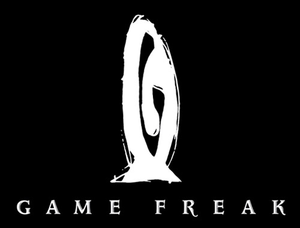

|  |
| Developer Name: |
Game Freak |
| Description: |
Predating the video game company, Game Freak was a self-published video game magazine created by Satoshi Tajiri and Ken Sugimori in the 1980s. Tajiri wrote and edited the text and Sugimori illustrated. Tajiri also used "Game Freak" as his pen name when he wrote as a freelance writer to publications such as Family Computer Magazine and Famicom Tsūshin. On April 26, 1989, Tajiri and Sugimori started a video game development company with the same name. One of Game Freak's first games was the Nintendo Entertainment System action and puzzle game Quinty, which was released in North America as Mendel Palace. Its most popular series, Pokémon—the romanized contraction of the Japanese brand Pocket Monsters (ポケットモンスター Poketto Monsutā)—is published and distributed by The Pokémon Company and Nintendo worldwide. |
| City: |
Tokyo |
| Country: |
Japan |
| Established: |
1989 |
|